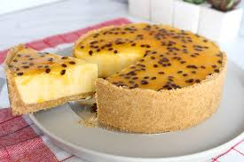
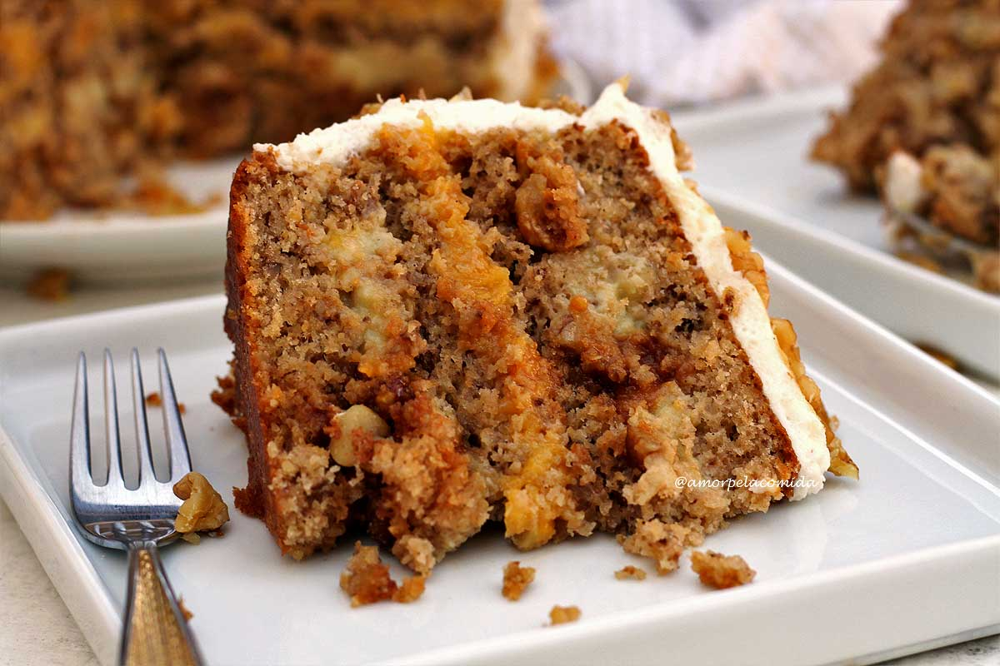
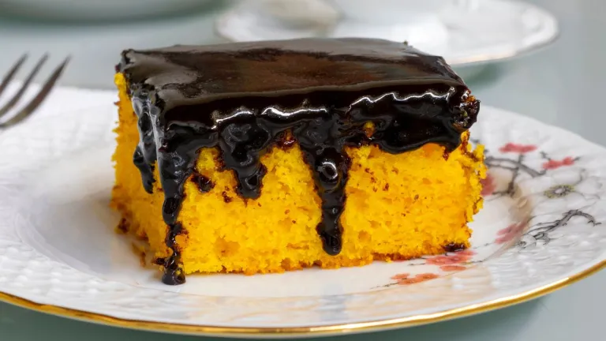
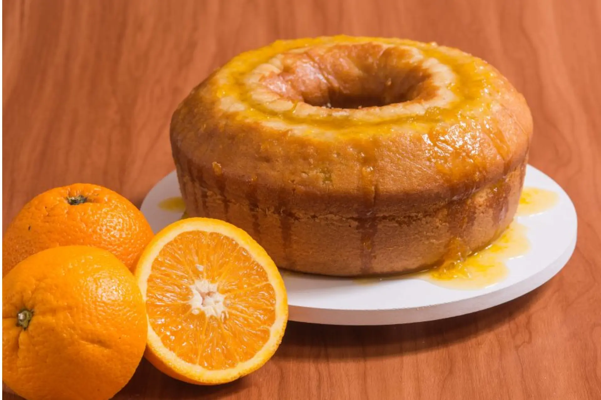
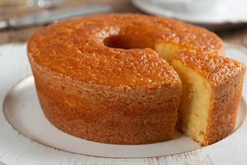
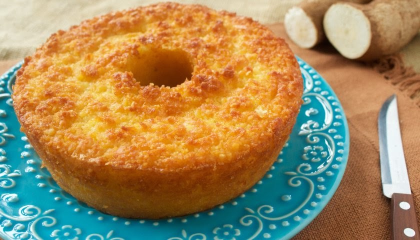

PÃES
Pão Caseiro
Aprenda a fazer um pão simples e delicioso.
SOBREMESAS
Torta de Maracujá
Torta cremosa de maracujá, com sabor tropical equilibrando doçura e acidez, finalizada com cobertura brilhante e irresistível.

SOBREMESAS
Bolo de Chocolate
Um bolo com sabor intenso de chocolate.
SOBREMESAS
Bolo de Nozes
É uma iguaria clássica, conhecida pelo seu sabor rico e textura agradável.
SOBREMESAS
Bolo de Cenoura
Bolo fofinho de cenoura com cobertura cremosa de chocolate, simples e irresistível.

SOBREMESAS
Bolo de Limão
Bolo leve e aromático, com toque cítrico refrescante e cobertura delicada de limão.
CAFÉ DA TARDE
Bolo de Laranja
Bolo macio e perfumado, com sabor intenso de laranja e frescor natural em cada fatia.
CAFÉ DA TARDE
Bolo de Milho
Bolo cremoso e dourado, com sabor caseiro de milho e textura macia que derrete na boca.
CAFÉ DA TARDE
Bolo de Mandioca
Bolo rústico e úmido, com sabor autêntico de mandioca e toque aconchegante de receita caseira.